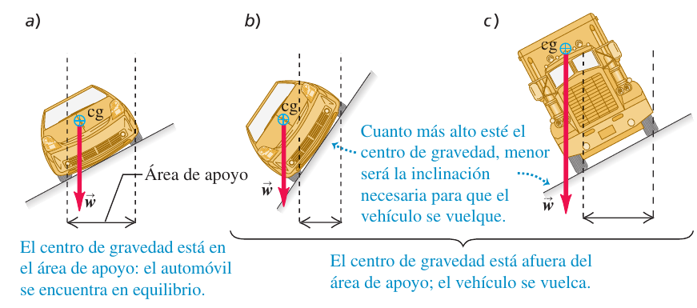
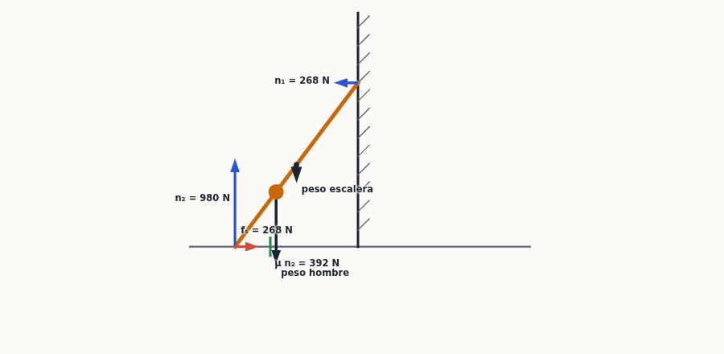
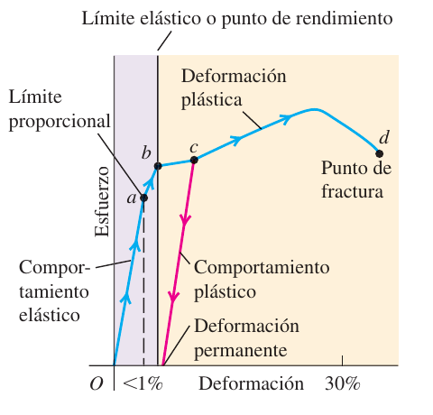

Equilibrio y elasticidad
Un puente, una escalera apoyada en la pared, tu antebrazo sosteniendo una mancuerna: todos están quietos aunque actúen fuerzas sobre ellos. Aquí aprendes cuándo un cuerpo rígido no se traslada ni gira (dos condiciones, $\sum\vec F=0$ y $\sum\vec\tau=0$), cómo se plantea y se resuelve un problema de equilibrio, y qué le pasa a un cuerpo real cuando lo estiras, lo comprimes o lo cortas (esfuerzo, deformación y módulos de elasticidad).
El tema en 5 minutos P
Una sola idea: un puente, una escalera apoyada en la pared o tu antebrazo con una mancuerna están quietos aunque actúen fuerzas sobre ellos. Eso exige dos cosas: que las fuerzas se compensen ($\sum\vec F=0$, no se traslada) y que las torcas se compensen ($\sum\vec\tau=0$, no gira). No hay nada nuevo de rotación: es el tema 10 con $\alpha=0$. La segunda mitad del tema mira qué le pasa a un cuerpo real cargado: se estira, se comprime o se tuerce un poco, y esa deformación es proporcional a la fuerza por unidad de área (esfuerzo ÷ deformación = módulo de elasticidad).
Necesitas: los diagramas de cuerpo libre, la normal y la fricción estática $f_s\le\mu_sn$ (T4-T5); el centro de masa (T8); y la torca $\tau=Fl=rF\,\mathrm{sen}\,\varphi$ con su signo (T10). Para la elasticidad, solo la idea de presión (1 Pa = 1 N/m²) y la ley de Hooke del resorte (T6). Si el enunciado no da $g$, usa $9{,}8\ \text{m/s}^2$.
El método en 4 pasos (úsalo siempre, en este orden)
Es la «Estrategia para resolver problemas 11.1» del libro, con el paso de elasticidad añadido. U p.344
Las 6 fórmulas que hay que saber
| Fórmula | Cuándo se usa |
|---|---|
| $\sum\vec F=0$, $\ \sum\vec\tau=0$ (en el plano $\sum F_x=\sum F_y=\sum\tau_z=0$) | Siempre que algo esté «en reposo», «en equilibrio», «sin moverse ni girar». |
| $\tau=Fl=rF\,\mathrm{sen}\,\varphi$ | Cada torca: «brazo de palanca», viga inclinada, cable que forma un ángulo. |
| $x_{cg}=\dfrac{\sum m_ix_i}{\sum m_i}$ | «¿Dónde pongo el apoyo?», «¿dónde está el centro de gravedad?», «¿hasta dónde puede ir sin que vuelque?». |
| $f_s\le\mu_sn$ | Escaleras y apoyos con rozamiento: «¿resbala?», «coeficiente mínimo», «¿hasta dónde sube?». |
| $Y=\dfrac{F_\perp/A}{\Delta l/l_0}\ \Rightarrow\ \Delta l=\dfrac{F_\perp l_0}{AY}$ | «Alargamiento», «se estira», «se acorta», alambre, cable o varilla cargados. |
| $B=-\dfrac{\Delta p}{\Delta V/V_0}$, $\ S=\dfrac{F_\parallel/A}{x/h}$ | $B$: «presión», «profundidad», «cambio de volumen o densidad». $S$: fuerzas tangentes, «corte», «desplazamiento lateral». |
Qué cae en examen
Ningún examen de 2018 a 2025 tiene un problema ni una pregunta de teoría de este tema. Aun así entra en el temario y en la PEC 2 (módulo 2, temas 6-11). Prepáralo así: (1) domina el método de equilibrio con torcas (secciones 1-3), que es el mismo que el de los problemas de torcas y rodadura del tema 10, que sí caen mucho; (2) aprende a definir esfuerzo, deformación y los tres módulos con un ejemplo numérico, por si sale de teoría (guion en «Preguntas de teoría»). P
Elige tu ruta
Esta página + lo marcado 🔴 imprescindible (secciones 1-4) + ejercicios del bloque «Núcleo».
Todo lo anterior + 🟡 elasticidad y plasticidad + bloque «Práctica» + guion de teoría.
Chuleta, errores frecuentes, lista de comprobación y E3, E4 y E9 sin mirar la solución.
¿?¿Qué tipo de problema es? 🔴 P
Lee el enunciado, busca la pista en la primera columna y ve directo al método y al ejercicio modelo.
| Si el enunciado dice… | Haz esto | Ejercicio modelo |
|---|---|---|
| «¿dónde se coloca el apoyo?», «barra con masas en los extremos» | Cada pieza uniforme = partícula en su centro; $x_{cg}=\sum m_ix_i/\sum m_i$; el apoyo único va bajo el cg. | E1 |
| «dos personas llevan una tabla», «¿en qué punto la sostiene?» | $\sum F_y=0$ da la fuerza que falta; torcas respecto al punto de la fuerza conocida dan su posición. | E2 |
| «¿hasta dónde puede caminar sin que vuelque?», «¿masa máxima en el extremo?» | A punto de volcar, el otro apoyo deja de empujar: el cg del conjunto está sobre el apoyo límite. | Ejemplo 11.1 |
| «viga con bisagra y cable», «fuerza que ejerce la pared» | Torcas respecto a la bisagra ⇒ $T$; $\sum F_x$, $\sum F_y$ ⇒ las dos componentes de la bisagra. | E3 |
| «viga inclinada», «el cable forma 40° con la viga» | Brazo de cada fuerza $=r\,\mathrm{sen}$(ángulo entre viga y fuerza); componentes con el ángulo respecto a la horizontal. | E5 |
| «escalera contra una pared lisa», «coeficiente mínimo», «¿hasta dónde sube?» | $n_2=$ suma de pesos; torcas en la base con brazos horizontales ⇒ $n_1=f_s$; resbala cuando $f_s=\mu_sn_2$. | E4 |
| «antebrazo», «tendón», «músculo», «articulación» | Torcas respecto a la articulación ⇒ fuerza del músculo; componentes negativas = sentido contrario. | Ejemplo 11.4 |
| «alargamiento», «alambre o varilla con una carga», «varillas unidas por los extremos» | $\Delta l=F_\perp l_0/(AY)$ con $A$ en m²; en serie, misma fuerza en cada tramo. | E6 |
| «fuerza paralela a cada lado», «desplazamiento lateral», «corte» | $x/h=F_\parallel/(AS)$ con $A$ el área de la cara paralela a la fuerza. | E7 |
| «a gran profundidad», «aumento de presión», «¿cuánto cambia el volumen o la densidad?» | $\Delta V/V_0=-\Delta p/B=-k\,\Delta p$, con $k$ en Pa$^{-1}$; misma masa ⇒ nueva densidad. | E8 |
| «colgada de dos alambres distintos», «igual esfuerzo / igual deformación» | Equilibrio ⇒ $T_B/T_A=x/(L-x)$; condición elástica ⇒ otra relación entre $T_A$ y $T_B$; igualar. | E9 |
| «pivote y cable que comprime la varilla», «¿cuánto se acorta?» | Equilibrio completo; después aplica $Y$ solo al tramo que soporta la fuerza axial. | Problema práctico |
| «Desarrolle el tema…» (equilibrio del sólido rígido; elasticidad) | Guion: idea → definición y ecuación → ejemplo con números → error típico. | Teoría |
1Condiciones de equilibrio 🔴 U p.340
🎯 Antes de leer: una regla descansa sobre tu dedo y no se mueve ni gira. ¿Qué dos condiciones, una sobre las fuerzas y otra sobre las torcas, se cumplen? (Piénsalo 20 s; la respuesta está en esta sección.)
Un cuerpo «aguanta quieto» si no se mueve ni gira. Que las fuerzas se compensen no basta: empuja hacia arriba un extremo de una barra y hacia abajo el otro con la misma fuerza; la fuerza total es cero… y la barra gira (así giras el volante de un coche). Hacen falta dos condiciones:
$$\sum\vec F=0\ \ \text{(ec. 11.1)}\qquad\qquad\sum\vec\tau=0\ \text{respecto a cualquier punto (ec. 11.2)}$$La primera impide que el centro de masa se acelere; la segunda, que aparezca aceleración angular. Si además el cuerpo está en reposo hablamos de equilibrio estático (uno que avanza a velocidad constante sin girar también está en equilibrio, pero no estático). En un problema plano son tres ecuaciones, $\sum F_x=0$, $\sum F_y=0$, $\sum\tau_z=0$ (ec. 11.6): como máximo tres incógnitas por cuerpo.
Error típico: creer que $\sum\vec F=0$ basta. Un par de fuerzas (iguales, opuestas y no alineadas) tiene fuerza neta cero y torca distinta de cero: el cuerpo gira. Y al revés: una sola fuerza aplicada en el centro de masa no lo hace girar, pero lo acelera.
U p.340, 343✍️ Comprueba que lo has entendido (2 min)
- Sobre una barra libre actúan dos fuerzas de 10 N, iguales y opuestas, cuyas rectas de acción están separadas 0,40 m. ¿Está en equilibrio?
Ver respuesta
No. $\sum\vec F=0$, pero forman un par: $\tau=10(0{,}40)=4{,}0$ N·m respecto a cualquier punto. La barra no se traslada, pero empieza a girar. - Una caja se desliza por el suelo a velocidad constante, sin girar. ¿Está en equilibrio? ¿Es equilibrio estático?
Ver respuesta
Está en equilibrio ($\vec a_{cm}=0$ y $\alpha=0$, así que $\sum\vec F=0$ y $\sum\vec\tau=0$), pero no estático, porque no está en reposo. - En un problema plano con un solo cuerpo, ¿cuántas incógnitas puedes despejar como máximo con las condiciones de equilibrio? ¿Ganas ecuaciones tomando torcas respecto a otro punto?
Ver respuesta
Tres: $\sum F_x=0$, $\sum F_y=0$, $\sum\tau_z=0$. Las torcas respecto a otro punto no dan información nueva (sirven para comprobar o para despejar más cómodo), salvo que sustituyas con ellas una de las ecuaciones de fuerzas.
2Centro de gravedad y estabilidad 🔴 U p.340-343
🎯 Antes de leer: un camión muy cargado en lo alto vuelca con más facilidad que otro igual cargado abajo. ¿Qué punto del camión explica la diferencia? (Piénsalo 20 s; la respuesta está en esta sección.)
Cada trocito de un cuerpo pesa, pero a efectos de torca es como si todo el peso actuara en un único punto, el centro de gravedad (cg). Si $\vec g$ vale lo mismo en todo el cuerpo (lo supondremos siempre), el cg coincide con el centro de masa:
$$x_{cg}=\frac{m_1x_1+m_2x_2+\cdots}{m_1+m_2+\cdots}=\frac{\sum m_ix_i}{\sum m_i}\ \ \text{(ec. 11.3)},\qquad \vec\tau_{peso}=\vec r_{cm}\times\vec w\ \ \text{(ec. 11.5)}$$Una pieza uniforme y simétrica (barra, placa, esfera) se sustituye por una partícula en su centro geométrico. Ejemplo mínimo: masas $2m$ y $m$ en los extremos de una barra ligera de longitud $L$: $x_{cg}=\dfrac{2m(0)+m\,L}{3m}=\dfrac L3$ desde la masa mayor. El cg queda más cerca de la masa mayor, porque así sus torcas se igualan (figura).
Un objeto colgado de un punto se queda con el cg en la vertical de ese punto; colgándolo de dos puntos distintos, el cg está en el cruce de las dos verticales (fig. 11.4 de U). Con $g$ variable la diferencia es mínima: en una torre de 452 m el cg está solo unos 2 cm por debajo del cm.
Error típico: olvidar en el denominador una masa situada en $x=0$ (no suma arriba, pero sí abajo).
U p.341-342Un cuerpo apoyado sigue en equilibrio mientras la vertical que baja de su cg cae dentro del área delimitada por los apoyos. Cuanto más bajo el cg y más ancha la base, más cuesta volcarlo: un camión (cg alto) vuelca en una pendiente en la que un coche aguanta (figura del libro).
Ejemplo 11.1 (método «a punto de volcar»). Tabla uniforme de $L=6{,}0$ m y $M=90$ kg sobre dos caballetes separados $D=1{,}5$ m y centrados. ¿Qué masa máxima puede tener una persona de pie en el extremo derecho?
- Situación límite: justo antes de volcar, el caballete izquierdo deja de empujar ($n=0$) y el cg de tabla + persona está sobre el caballete derecho.
- Torcas respecto a ese caballete (solo quedan los dos pesos): el de la tabla a $D/2=0{,}75$ m a un lado, el de la persona a $L/2-D/2=2{,}25$ m al otro: $M(0{,}75)=m(2{,}25)$ ⇒ $m=\dfrac{MD}{L-D}=\dfrac{90(1{,}5)}{4{,}5}=\mathbf{30\ kg}$.

✍️ Comprueba que lo has entendido (2 min)
- Una barra uniforme de 2,0 m y 4,0 kg lleva una masa de 2,0 kg pegada en su extremo derecho. ¿A qué distancia del extremo izquierdo está el centro de gravedad?
Ver respuesta
$x_{cg}=\dfrac{4{,}0(1{,}0)+2{,}0(2{,}0)}{6{,}0}=1{,}33$ m (método de E1). - En la tabla del ejemplo 11.1 se sube una persona de 60 kg. ¿Cuánto puede alejarse del caballete derecho hacia el extremo?
Ver respuesta
Torcas respecto al caballete derecho: $90(0{,}75)=60\,d$ ⇒ $d=1{,}125$ m, la mitad de los 2,25 m que hay hasta el extremo. - Con los pies juntos, si te inclinas hacia delante te caes; con los pies separados (uno delante) aguantas más. ¿Por qué?
Ver respuesta
Con los pies separados el área de apoyo es mayor: la vertical del cg tarda más en salirse de ella.
3Resolver problemas de equilibrio de cuerpos rígidos 🔴 U p.343-347
🎯 Antes de leer: si una de las incógnitas es la fuerza de una bisagra, ¿respecto a qué punto te conviene calcular las torcas? (Piénsalo 20 s; la respuesta está en esta sección.)
Un problema de equilibrio es contabilidad de fuerzas y de palancas: unas fuerzas las conoces (pesos) y otras «se ajustan solas» para que todo cuadre (normales, fricción, tensiones, bisagra). Las ecuaciones de equilibrio dicen cuánto vale cada una.
- Dibuja el cuerpo solo (diagrama de cuerpo libre) con todas las fuerzas externas y dónde se aplican: pesos en el cg, normales, fricción, tensiones a lo largo del cable, y la fuerza de una bisagra como dos componentes desconocidas (figura).
- Cuenta las incógnitas: tres ecuaciones ($\sum F_x=0$, $\sum F_y=0$, $\sum\tau_z=0$), tres incógnitas como máximo.
- Elige el punto de las torcas donde actúan fuerzas desconocidas (la bisagra, el pie de la escalera): no producen torca y desaparecen de la ecuación.
- Cada torca con su brazo perpendicular, $l=r\,\mathrm{sen}\,\varphi$, y su signo (antihorario $+$). Para un peso, el brazo es la distancia horizontal.
- Comprueba con otro punto: si $\sum\vec F=0$ y $\sum\vec\tau=0$ respecto a un punto, la torca es cero respecto a cualquiera; los resultados deben coincidir.
- Mezclar puntos: la torca depende del punto elegido, pero una vez elegido, todas las torcas de esa ecuación van respecto a él.
- Suponer que la fuerza de una bisagra va «a lo largo de la viga»: su dirección es desconocida, por eso lleva dos componentes. La tensión de un cable, en cambio, sí va siempre a lo largo del cable.
- Usar como brazo la distancia medida a lo largo de una escalera o viga inclinada, en lugar de la perpendicular a la recta de la fuerza.

Cuando una fuerza de dirección desconocida actúa en un punto (bisagra, codo, pie de escalera), toma torcas respecto a ese punto y te quitas dos incógnitas de golpe. Antebrazo horizontal con una mancuerna de $w=200$ N a $L=0{,}30$ m del codo; el tendón del bíceps se inserta a $D=0{,}050$ m del codo y tira a $\theta=80^\circ$ del antebrazo (peso del antebrazo despreciable):
- Torcas respecto al codo: $T\,\mathrm{sen}\,\theta\,D=wL$ ⇒ $T=\dfrac{(0{,}30)(200)}{(0{,}050)\,\mathrm{sen}\,80^\circ}\approx\mathbf{1220\ N}$, unas seis veces el peso: el tendón tiene un brazo de palanca muy corto.
- Fuerzas: $\sum F_x=0$ ⇒ $E_x=T\cos\theta\approx\mathbf{210\ N}$; $\sum F_y=0$ ⇒ $E_y=w-T\,\mathrm{sen}\,\theta=-\mathbf{1000\ N}$.
- Una componente negativa no es un error: la fuerza del codo apunta al revés de como la dibujaste (hacia abajo).

✍️ Comprueba que lo has entendido (2 min)
- Una tabla uniforme de 4,0 m y 200 N está apoyada en sus dos extremos. Encima, una caja de 400 N a 1,0 m del extremo izquierdo. ¿Cuánto empuja cada apoyo?
Ver respuesta
Torcas respecto al extremo izquierdo: $n_D(4{,}0)=200(2{,}0)+400(1{,}0)$ ⇒ $n_D=200$ N; $\sum F_y=0$ ⇒ $n_I=600-200=400$ N. Empuja más el apoyo más cercano a la caja. - Una escalera uniforme de 5,0 m y 180 N forma 53,1° con el suelo y se apoya en una pared lisa (base a 3,0 m de la pared), sin nadie encima. ¿Qué coeficiente de fricción mínimo necesita?
Ver respuesta
$n_2=180$ N; torcas en la base: $n_1(4{,}0)=180(1{,}5)$ ⇒ $n_1=f_s=67{,}5$ N; $\mu_{s,\text{mín}}=67{,}5/180=0{,}375$. - Una barra horizontal ligera de 1,2 m tiene una bisagra en la pared; de su extremo cuelga un letrero de 50 N y un cable va desde ese extremo hasta la pared formando 30° con la barra. Halla $T$ y la fuerza de la bisagra.
Ver respuesta
Torcas en la bisagra: $T\,\mathrm{sen}\,30^\circ(1{,}2)=50(1{,}2)$ ⇒ $T=100$ N. $H_h=T\cos30^\circ=86{,}6$ N (hacia fuera de la pared); $H_v=50-T\,\mathrm{sen}\,30^\circ=0$ (método de E3).
4Esfuerzo, deformación y módulos de elasticidad 🔴 U p.347-353
🎯 Antes de leer: dos alambres del mismo material, uno con el doble de grosor, soportan el mismo peso. ¿Cuál se estira más? ¿Cuál soporta mayor esfuerzo? (Piénsalo 20 s; la respuesta está en esta sección.)
Ningún cuerpo es rígido del todo: una cuerda de escalada se alarga al colgarte, un buzo se «encoge» un poco a gran profundidad. Para comparar un alambre fino con uno grueso del mismo material no sirve la fuerza total: se usa la fuerza por unidad de área (esfuerzo, en Pa = N/m²) y el cambio fraccionario de tamaño (deformación, sin unidades). En la zona elástica son proporcionales, como en un resorte:
$$\frac{\text{esfuerzo}}{\text{deformación}}=\text{módulo de elasticidad}\qquad\text{(ec. 11.7)}$$Hay tres maneras de deformar un cuerpo y un módulo para cada una (figura): $Y$ si se estira o se comprime en una dirección, $B$ si se aprieta por todos lados (presión) y $S$ si las fuerzas son tangentes a las caras (corte). Confundir el módulo es el primer error típico.
U p.347Barra de longitud $l_0$ y sección $A$ con fuerzas $F_\perp$ perpendiculares a la sección, que la estiran (tensión) o la aprietan (compresión):
$$\text{esfuerzo}=\frac{F_\perp}{A}\ (11.8),\qquad \text{deformación}=\frac{\Delta l}{l_0}\ (11.9),\qquad Y=\frac{F_\perp/A}{\Delta l/l_0}=\frac{F_\perp\,l_0}{A\,\Delta l}\ (11.10)\ \ \Rightarrow\ \ \Delta l=\frac{F_\perp\,l_0}{A\,Y}$$$Y$ grande = material rígido (acero); pequeño = blando (goma). Muchos materiales tienen el mismo $Y$ en tensión y en compresión.
Ejemplo 11.5: varilla de acero de 2,0 m y $0{,}30\ \text{cm}^2=3{,}0\times10^{-5}\ \text{m}^2$ de la que cuelga una fresadora de 550 kg. Esfuerzo $=\dfrac{550(9{,}8)}{3{,}0\times10^{-5}}=1{,}8\times10^{8}$ Pa; deformación $=\dfrac{1{,}8\times10^8}{20\times10^{10}}=9{,}0\times10^{-4}$; alargamiento $\Delta l=9{,}0\times10^{-4}(2{,}0\ \text{m})=\mathbf{1{,}8\ mm}$.
Error típico: dejar el área en cm² o mm² ($1\ \text{cm}^2=10^{-4}\ \text{m}^2$, $1\ \text{mm}^2=10^{-6}\ \text{m}^2$) o usar el diámetro como radio ($A=\pi d^2/4$).
U p.348-350El hormigón aguanta bien la compresión pero falla con una tensión comparable: por eso los arcos, donde el peso comprime las piedras sin ponerlas en tensión. Una viga horizontal apoyada en sus extremos se flexiona por su peso: la parte superior queda en compresión, la inferior en tensión y la línea central sin ninguna de las dos. Por eso la sección en I pone el material arriba y abajo (donde están los esfuerzos) y es estrecha en el centro (ahorra peso).
U p.349Cuando un fluido o un sólido se aprieta por todos lados, el esfuerzo es la presión $p=F_\perp/A$ (ec. 11.11; un escalar) y la deformación es el cambio fraccionario de volumen $\Delta V/V_0$ (ec. 11.12):
$$B=-\frac{\Delta p}{\Delta V/V_0}\quad\text{(11.13)},\qquad k=\frac1B\ \ \text{(compresibilidad, 11.14)}$$El signo menos está porque un aumento de presión ($\Delta p\gt 0$) reduce el volumen ($\Delta V\lt 0$): así $B\gt 0$. $B$ grande = difícil de comprimir. Agua: $k=46{,}4\times10^{-6}\ \text{atm}^{-1}$ (tabla 11.2).
Ejemplo 11.6: $0{,}25\ \text{m}^3$ de aceite ($B=5{,}0\times10^9$ Pa) en una prensa sufren $\Delta p=1{,}6\times10^7$ Pa (unas 160 atm): $\dfrac{\Delta V}{V_0}=-\dfrac{1{,}6\times10^7}{5{,}0\times10^9}=-3{,}2\times10^{-3}$, así que $\Delta V=\mathbf{-8{,}0\times10^{-4}\ m^3}$ (un 0,32 % menos: aunque la presión es grande, el cambio es pequeño).
Error típico: mezclar $k$ en atm$^{-1}$ con $\Delta p$ en Pa (1 atm $=1{,}013\times10^5$ Pa), u olvidar el signo menos.
U p.350-351Cuando las fuerzas son tangentes a las caras (como al empujar de lado la tapa de un libro), una cara se desplaza una distancia $x$ respecto a la opuesta, separada $h$, sin que cambie el volumen:
$$\text{esfuerzo}=\frac{F_\parallel}{A}\ (11.15),\qquad\text{deformación}=\frac{x}{h}\ (11.16),\qquad S=\frac{F_\parallel/A}{x/h}=\frac{F_\parallel\,h}{A\,x}\ (11.17)$$$A$ es el área de la cara paralela a la fuerza. Para un material dado, $S$ suele valer entre un tercio y la mitad de $Y$. Solo los sólidos tienen $S$ (un fluido no resiste el corte).
Ejemplo 11.7: placa de latón ($S=3{,}5\times10^{10}$ Pa) de 0,80 m de lado y 0,50 cm de espesor; un terremoto desplaza un canto $x=0{,}16$ mm respecto al otro. Deformación $x/h=0{,}16\times10^{-3}/0{,}80=2{,}0\times10^{-4}$; esfuerzo $=S(x/h)=7{,}0\times10^{6}$ Pa; área de cada canto $(0{,}80)(0{,}0050)=4{,}0\times10^{-3}\ \text{m}^2$ ⇒ $F_\parallel=\mathbf{2{,}8\times10^{4}\ N}$.
U p.352| Material | $Y$ (Young) | $B$ (volumétrico) | $S$ (corte) |
|---|---|---|---|
| Aluminio | $7{,}0\times10^{10}$ | $7{,}5\times10^{10}$ | $2{,}5\times10^{10}$ |
| Latón | $9{,}0\times10^{10}$ | $6{,}0\times10^{10}$ | $3{,}5\times10^{10}$ |
| Cobre | $11\times10^{10}$ | $14\times10^{10}$ | $4{,}4\times10^{10}$ |
| Hierro | $21\times10^{10}$ | $16\times10^{10}$ | $7{,}7\times10^{10}$ |
| Plomo | $1{,}6\times10^{10}$ | $4{,}1\times10^{10}$ | $0{,}6\times10^{10}$ |
| Níquel | $21\times10^{10}$ | $17\times10^{10}$ | $7{,}8\times10^{10}$ |
| Goma de silicona | $0{,}001\times10^{10}$ | $0{,}2\times10^{10}$ | $0{,}0002\times10^{10}$ |
| Acero | $20\times10^{10}$ | $16\times10^{10}$ | $7{,}5\times10^{10}$ |
| Tendón (típico) | $0{,}12\times10^{10}$ | — | — |
✍️ Comprueba que lo has entendido (2 min)
- Un alambre de acero de 2,0 m y 1,0 mm² de sección sostiene 20 kg. ¿Esfuerzo y alargamiento? ($Y=20\times10^{10}$ Pa)
Ver respuesta
Esfuerzo $=\dfrac{20(9{,}8)}{1{,}0\times10^{-6}}=1{,}96\times10^8$ Pa; $\Delta l=\dfrac{1{,}96\times10^8(2{,}0)}{2{,}0\times10^{11}}=1{,}96\times10^{-3}$ m $\approx2{,}0$ mm. - Una muestra de agua ($k=46{,}4\times10^{-6}\ \text{atm}^{-1}$) sufre un aumento de presión de 100 atm. ¿Cuánto cambia su volumen, en %?
Ver respuesta
$\Delta V/V_0=-k\,\Delta p=-46{,}4\times10^{-6}(100)=-4{,}64\times10^{-3}$: un 0,46 % menos (aquí no hace falta pasar a Pa porque $k$ y $\Delta p$ ya van en atm). - Un bloque de aluminio ($S=2{,}5\times10^{10}$ Pa) de 5,0 cm de alto tiene caras superior e inferior de 10 cm × 10 cm. Sobre la superior actúa una fuerza tangente de $1{,}0\times10^4$ N (y la base está fija). ¿Cuánto se desplaza la cara superior?
Ver respuesta
Esfuerzo $=1{,}0\times10^4/0{,}010=1{,}0\times10^6$ Pa; deformación $=1{,}0\times10^6/2{,}5\times10^{10}=4{,}0\times10^{-5}$; $x=4{,}0\times10^{-5}(0{,}050)=2{,}0\times10^{-6}$ m, 2 micras (método de E7).
5Elasticidad y plasticidad 🟡 U p.353-354
🎯 Antes de leer: estiras un poco un clip y lo sueltas: vuelve a su forma. Si lo doblas mucho, se queda doblado. ¿Qué diferencia física hay entre los dos casos? (Piénsalo 20 s; la respuesta está en esta sección.)
La ley de Hooke solo vale si no te pasas. Estira un clip: al principio vuelve a su forma; si lo estiras mucho, se queda doblado; si sigues, se rompe. La curva de un metal cuenta esa historia:
- Límite proporcional (a): hasta aquí la curva es una recta y vale la ley de Hooke.
- Límite elástico o punto de rendimiento (b): entre $a$ y $b$ el material sigue siendo elástico (si descargas, recupera su longitud) aunque ya no sea proporcional. Suele corresponder a deformaciones menores del 1 %.
- Zona plástica ($b\to d$): si cargas más allá de $b$ (hasta $c$) y descargas, el material no vuelve a deformación cero: baja por una recta casi paralela a la primera y queda una deformación permanente.
- Fractura (d): el esfuerzo que rompe el material es el esfuerzo de ruptura (en tensión, resistencia a la tensión). Un material dúctil se estira mucho antes de romper (puede pasar del 30 %); uno frágil se rompe poco después del límite elástico.
Error típico: confundir límite proporcional (fin de la recta) con límite elástico (fin de la recuperación completa), o aplicar $\Delta l=F_\perp l_0/(AY)$ por encima del límite proporcional.
U p.353-354

Esfuerzos de ruptura (Pa): aluminio $2{,}2\times10^{8}$; latón $4{,}7\times10^{8}$; vidrio $10\times10^{8}$; hierro $3{,}0\times10^{8}$; acero $(5\text{–}20)\times10^{8}$; tendón $1\times10^{8}$. Rigidez y resistencia son cosas distintas: hierro y acero tienen casi el mismo $Y$ (se deforman igual), pero el acero aguanta más antes de romper.
Caucho y tendones: no tienen zona plástica clásica. El caucho se estira más de siete veces su longitud y recupera la forma, pero sin proporcionalidad, y al descargar sigue una curva distinta de la de carga: es la histéresis elástica (fig. 11.20 de U). El trabajo de deformarlo es mayor que el que devuelve; la diferencia se disipa como calor, por eso el caucho amortigua vibraciones.
U p.353-354✍️ Comprueba que lo has entendido (2 min)
- Cargas una barra hasta un punto entre $a$ y $b$ de la fig. 11.19 y la descargas. ¿Recupera su longitud? ¿Y si la cargas hasta $c$?
Ver respuesta
Entre $a$ y $b$ sí (sigue siendo elástica, aunque ya no proporcional). Desde $c$ baja por una recta paralela a la inicial y queda una deformación permanente. - Un alambre de acero de 1,0 mm² de sección y esfuerzo de ruptura $5\times10^8$ Pa. ¿Qué fuerza lo rompe?
Ver respuesta
$F=\sigma_{rup}A=5\times10^8(1{,}0\times10^{-6})=500$ N, el peso de unos 51 kg. - Con el mismo esfuerzo, ¿se estira más el hierro o el acero? ¿Cuál aguanta más antes de romper?
Ver respuesta
Casi igual (tienen $Y$ parecido: $21$ y $20\times10^{10}$ Pa). Pero el acero tiene un esfuerzo de ruptura mayor: es más resistente, no más rígido.
6Ejercicios resueltos
Este tema no tiene ninguna pregunta de examen real (convocatorias 2018-2025), así que los ejercicios son los del solucionario (E1-E9, traducidos y ampliados) y el problema práctico del capítulo, ordenados por método, no por fuente: siete en el Núcleo (uno por método) y tres de Práctica que repiten esos métodos en situaciones nuevas. Los ejemplos del libro que enseñan algo distinto (vuelco, escalera, antebrazo) están resueltos dentro de la teoría. Intenta resolver tú antes de abrir la solución. Cada ejercicio termina con su receta. Si el enunciado no da $g$, se usa $9{,}8$ m/s².
| Ejercicio | Qué tipo es | Método que te llevas |
|---|---|---|
| E1 | Centro de gravedad de piezas | Cada pieza uniforme = partícula en su centro; $x_{cg}=\sum m_ix_i/\sum m_i$; apoyo bajo el cg |
| E3 | Viga con bisagra y cable | Torcas en la bisagra ⇒ $T$; $\sum F_x$, $\sum F_y$ ⇒ las dos componentes de la bisagra; comprobar con otro punto |
| E4 | Escalera con fricción: posición límite | $n_2=$ suma de pesos; torcas en la base con brazos horizontales ⇒ $f_s=n_1$; resbala cuando $f_s=\mu_sn_2$ |
| E6 | Tensión: alargamiento con $Y$ | $\Delta l=F_\perp l_0/(AY)$, $A=\pi d^2/4$ en m²; en serie, misma fuerza en cada tramo |
| E7 | Corte con $S$ | $x/h=F_\parallel/(AS)$ con $A$ el área de la cara paralela a la fuerza |
| E8 | Compresión volumétrica con $B$ o $k$ | $\Delta V/V_0=-k\,\Delta p$ con $k$ en Pa$^{-1}$; misma masa ⇒ nueva densidad |
| E9 | Equilibrio + elasticidad | Equilibrio ⇒ $T_B/T_A=x/(L-x)$; condición elástica ⇒ otra razón $T_B/T_A$; igualar y despejar $x$ |
E1 — Ejercicio 11.1: barra con dos masas, ¿dónde se pone el apoyo? E 🟡 U p.341-342, 357
Una barra uniforme de 50,0 cm de longitud y 0,120 kg tiene adherida una masa pequeña de 0,055 kg en su extremo izquierdo y otra de 0,110 kg en el derecho. Las masas se consideran puntuales. Se quiere equilibrar el sistema horizontalmente sobre un apoyo colocado justo bajo su centro de gravedad. ¿A qué distancia del extremo izquierdo debe colocarse?
Inténtalo primero; abre una pista solo si te atascas.
Pista 1
Un cuerpo apoyado en un solo punto está en equilibrio si ese punto está bajo el centro de gravedad (con $g$ uniforme, el centro de masa).
Pista 2
Sustituye la barra por una partícula en su centro y calcula $x_{cm}=\sum m_ix_i/\sum m_i$; no olvides la masa de $x=0$ en el denominador.
Solución completa
- Centro de gravedad (= centro de masa con $g$ uniforme): $x_{cm}=\dfrac{\sum m_i\,x_i}{\sum m_i}$
- Una barra uniforme equivale a una partícula en su centro
- Idea. Con un solo apoyo hay equilibrio si el apoyo está bajo el cg (la torca del peso respecto a él es cero). Basta calcular $x_{cm}$.
- Posiciones (origen en el extremo izquierdo): barra 0,120 kg en el centro, $x=0{,}250$ m; masa 0,055 kg en $x=0$; masa 0,110 kg en $x=0{,}500$ m.
- Centro de masa: $$x_{cm}=\frac{(0{,}120)(0{,}250)+(0{,}055)(0)+(0{,}110)(0{,}500)}{0{,}120+0{,}055+0{,}110}=\frac{0{,}030+0+0{,}055}{0{,}285}=\frac{0{,}085}{0{,}285}=0{,}298\ \text{m}$$ La masa en $x=0$ no suma en el numerador, pero sí en el denominador.
- Resultado: el apoyo va a 29,8 cm del extremo izquierdo: un poco a la derecha del centro, porque la masa de la derecha es mayor.
Olvidar en el denominador la masa situada en $x=0$ (no suma en el numerador, pero sí en la masa total).
E3 — Ejercicio 11.14: viga horizontal con cable y bisagra E 🔴 U p.343, 358
La viga horizontal de la figura E11.14 pesa 190 N y su centro de gravedad está en su centro. Calcula a) la tensión del cable y b) las componentes horizontal y vertical de la fuerza que ejerce la pared sobre la viga. (La viga mide 4,00 m y está unida a la pared por una bisagra; del extremo libre cuelga una carga de 300 N; el cable, de 5,00 m, va del extremo libre a un punto de la pared 3,00 m más arriba que la bisagra.)
Inténtalo primero; abre una pista solo si te atascas.
Pista 1
Tres incógnitas ($T$, $H_h$, $H_v$): elige la bisagra como punto de las torcas, así las fuerzas de la bisagra desaparecen.
Pista 2
$T\cos\theta$ no da torca (su recta pasa por la bisagra); la componente que sí cuenta es $T\sin\theta$. Luego $\sum F_x=0$ y $\sum F_y=0$.
Solución completa
- $\sum\tau=0$ respecto a la bisagra; $\sum F_x=0$; $\sum F_y=0$
- Torca: $\tau=F_\perp\cdot r$ (solo cuenta la componente perpendicular a la viga)
- Geometría del cable (triángulo 3-4-5; $\theta$ = ángulo del cable con la viga): $$\sin\theta=\frac35=0{,}600,\qquad\cos\theta=\frac45=0{,}800$$
- DCL. Peso 190 N a 2,00 m de la bisagra; carga 300 N a 4,00 m; tensión $T$ en el extremo, con componentes $T\cos\theta$ (hacia la pared) y $T\sin\theta$ (hacia arriba); bisagra con $H_h$ y $H_v$.
- a) Torcas respecto a la bisagra ($H_h$, $H_v$ y $T\cos\theta$ no dan torca): $$T\sin\theta\,(4{,}00)-190(2{,}00)-300(4{,}00)=0$$ $$T=\frac{380+1200}{4{,}00(0{,}600)}=\frac{1580}{2{,}40}=\mathbf{658\ N}$$
- b) Fuerzas. Horizontal: $$H_h-T\cos\theta=0\ \Rightarrow\ H_h=658(0{,}800)=\mathbf{527\ N}$$ Vertical: $$H_v+T\sin\theta-190-300=0\ \Rightarrow\ H_v=490-395=\mathbf{95\ N}\ \text{hacia arriba}$$
- Comprobación con otro punto. Respecto al extremo libre: $-H_v(4{,}00)+190(2{,}00)=0\Rightarrow H_v=95$ N ✓. Respecto al punto de la pared donde se ata el cable: $H_h(3{,}00)-190(2{,}00)-300(4{,}00)=0\Rightarrow H_h=527$ N ✓.
Suponer que la bisagra solo empuja a lo largo de la viga ($H_v=0$) o poner $T\cos\theta$ en la torca (su brazo de palanca es cero).
E4 — Ejercicio 11.10: escalera con fricción en el suelo, ¿hasta dónde puede subir el hombre? E 🔴 U p.343-345, 357
Una escalera uniforme de 5,0 m de longitud que pesa 160 N descansa contra una pared vertical sin fricción con su base a 3,0 m de la pared. El coeficiente de fricción estática entre la base y el suelo es 0,40. Un hombre de 740 N sube lentamente. a) ¿Qué fuerza de fricción máxima puede ejercer el suelo en la base? b) ¿Cuál es la fricción cuando el hombre ha subido 1,0 m a lo largo de la escalera? c) ¿Hasta dónde puede subir antes de que la escalera resbale?
Inténtalo primero; abre una pista solo si te atascas.
Pista 1
La pared es lisa: solo $n_1$ horizontal. $\sum F_y=0$ da $n_2$ sin depender de dónde esté el hombre.
Pista 2
Torcas respecto a la base; el brazo del hombre es la distancia horizontal, $\tfrac35s$. Resbala cuando $f_s=n_1$ alcanza $\mu_sn_2$.
Solución completa
- $\sum F_x=0$, $\sum F_y=0$, $\sum\tau=0$ (torcas respecto a la base)
- Fricción estática máxima: $f_{s,\text{máx}}=\mu_s\,n_2$
- Geometría 3-4-5: altura $4{,}0$ m; un punto a distancia $s$ a lo largo de la escalera está a $\tfrac35 s$ en horizontal de la base
- Geometría: $$\text{altura}=\sqrt{5{,}0^2-3{,}0^2}=4{,}0\ \text{m}$$ Pared lisa: solo $n_1$ horizontal. Suelo: $n_2$ vertical y fricción $f_s$ hacia la pared. Pesos: 160 N en el centro (1,5 m en horizontal) y 740 N del hombre.
- a) Fricción máxima. Vertical: $$n_2-160-740=0\ \Rightarrow\ n_2=900\ \text{N}\ \ (\text{sea cual sea la posición del hombre})$$ $$f_{s,\text{máx}}=\mu_sn_2=0{,}40(900)=\mathbf{360\ N}$$
- b) Hombre a 1,0 m. Torcas respecto a la base (elimina $n_2$ y $f_s$): $$n_1(4{,}0)=160(1{,}5)+740\Big(\tfrac35\cdot1{,}0\Big)=240+444=684\ \text{N·m}\ \Rightarrow\ n_1=171\ \text{N}$$ Horizontal: $$f_s-n_1=0\ \Rightarrow\ f_s=\mathbf{171\ N}\lt360\ \text{N}\ \text{(no resbala)}$$
- c) Hasta dónde puede subir. Resbala cuando $f_s=n_1=360$ N: $$360(4{,}0)=160(1{,}5)+740\cdot\frac35\,s\ \Rightarrow\ 1440=240+444\,s\ \Rightarrow\ s=\frac{1200}{444}=\mathbf{2{,}7\ m}$$ A lo largo de la escalera (algo más de la mitad). En general $f_s=n_1=60+111\,s$ (N).
Usar 1,0 m como brazo de palanca del hombre (es la distancia a lo largo de la escalera; el brazo es la horizontal, 0,6 m); pensar que la normal del suelo crece al subir.
E6 — Ejercicio 11.26: varillas de acero y de cobre en serie E 🔴 U p.348-350, 359
Dos varillas circulares, una de acero y otra de cobre, se unen por los extremos. Cada una mide 0,750 m de longitud y 1,50 cm de diámetro. El conjunto se somete a una fuerza de tensión de 4000 N. Para cada varilla, determina a) la deformación y b) el alargamiento.
Inténtalo primero; abre una pista solo si te atascas.
Pista 1
Las dos varillas están en serie: soportan la misma fuerza de 4000 N, no la mitad cada una.
Pista 2
Esfuerzo $=F/A$ con $A=\pi d^2/4$; deformación $=$ esfuerzo$/Y$ y alargamiento $=$ deformación $\times\,l_0$.
Solución completa
- Esfuerzo de tensión: $\dfrac{F_\perp}{A}$; área circular: $A=\dfrac{\pi d^2}{4}$
- Módulo de Young: $Y=\dfrac{F_\perp/A}{\Delta l/l_0}$ ⇒ deformación $=\dfrac{\text{esfuerzo}}{Y}$; alargamiento $\Delta l=\text{deformación}\times l_0$
- Tabla 11.1: acero $Y=2{,}0\times10^{11}$ Pa; cobre $Y=1{,}1\times10^{11}$ Pa
- Misma fuerza en las dos (en serie): cortando el conjunto por cualquier sección y aplicando $\sum F=0$, la fuerza interna es 4000 N en toda su longitud.
- Área y esfuerzo: $$A=\frac{\pi(0{,}0150)^2}{4}=1{,}767\times10^{-4}\ \text{m}^2,\qquad\frac{F_\perp}{A}=\frac{4000}{1{,}767\times10^{-4}}=2{,}26\times10^{7}\ \text{Pa}$$
- a) Deformación: $$\text{acero: }\frac{2{,}26\times10^{7}}{2{,}0\times10^{11}}=\mathbf{1{,}1\times10^{-4}},\qquad\text{cobre: }\frac{2{,}26\times10^{7}}{1{,}1\times10^{11}}=\mathbf{2{,}1\times10^{-4}}$$
- b) Alargamiento ($l_0=0{,}750$ m): $$\text{acero: }(1{,}13\times10^{-4})(0{,}750)=\mathbf{8{,}5\times10^{-5}\ m},\qquad\text{cobre: }(2{,}06\times10^{-4})(0{,}750)=\mathbf{1{,}5\times10^{-4}\ m}$$ Total 0,24 mm. Mismo esfuerzo, distinto material: se estira más el de menor $Y$ (el cobre).
Repartir la fuerza (2000 N a cada una) como si estuvieran en paralelo; usar el diámetro como radio en $A$.
E7 — Ejercicio 11.36: placa de acero sometida a corte E 🟡 U p.352, 360
Una placa cuadrada de acero mide 10,0 cm por lado y 0,500 cm de espesor. a) Calcula la deformación por corte que se produce al aplicar a cada uno de los cuatro lados una fuerza de $9{,}0\times10^5$ N paralela a cada lado. b) Determina el desplazamiento $x$ en centímetros.
Inténtalo primero; abre una pista solo si te atascas.
Pista 1
Las fuerzas son paralelas a las caras: esfuerzo de corte, con el módulo de corte $S$ (no $Y$).
Pista 2
El área es la de la cara paralela a la fuerza: lado por espesor; deformación $=x/h$.
Solución completa
- Esfuerzo de corte: $\dfrac{F_\parallel}{A}$ ($A$ = cara paralela a la fuerza)
- Módulo de corte: $S=\dfrac{F_\parallel/A}{x/h}$ ⇒ deformación por corte $=\dfrac xh=\dfrac{F_\parallel}{A\,S}$
- Acero: $S=7{,}5\times10^{10}$ Pa
- Por qué es corte. Las fuerzas son paralelas a las caras sobre las que actúan; se equilibran por pares: la placa no se mueve, solo se deforma (el cuadrado pasa a rombo).
- Área (cara lateral: lado × espesor; $h=0{,}100$ m es la dimensión perpendicular al desplazamiento): $$A=(0{,}100)(0{,}00500)=5{,}00\times10^{-4}\ \text{m}^2$$
- Esfuerzo: $$\frac{F_\parallel}{A}=\frac{9{,}0\times10^5}{5{,}00\times10^{-4}}=1{,}8\times10^{9}\ \text{Pa}$$
- a) Deformación por corte: $$\frac xh=\frac{1{,}8\times10^{9}}{7{,}5\times10^{10}}=\mathbf{2{,}4\times10^{-2}}$$
- b) Desplazamiento: $$x=0{,}024(0{,}100)=2{,}4\times10^{-3}\ \text{m}=\mathbf{0{,}24\ cm}$$
Usar el área de la cara grande ($10\times10$ cm) o el módulo de Young en vez del de corte.
E8 — Ejercicio 11.34: agua en el abismo Challenger E 🟡 U p.350-351, 360
En el abismo Challenger de la Fosa de las Marianas, la profundidad del agua es 10,9 km y la presión es $1{,}16\times10^8$ Pa (cerca de $1{,}15\times10^3$ atm). a) Si se lleva un metro cúbico de agua de la superficie a esa profundidad, ¿cuánto cambiará su volumen? (La presión normal en la superficie es del orden de $1{,}0\times10^5$ Pa. Toma para el agua de mar la compresibilidad $k$ del agua dulce, tabla 11.2.) b) ¿Qué densidad tiene el agua de mar a esta profundidad? (En la superficie, $1{,}03\times10^3$ kg/m³.)
Inténtalo primero; abre una pista solo si te atascas.
Pista 1
Presión igual en todas direcciones: esfuerzo volumétrico con $\Delta p=p-p_0$ y $\Delta V/V_0=-k\,\Delta p$.
Pista 2
Pasa $k$ de atm$^{-1}$ a Pa$^{-1}$ antes de multiplicar; la densidad sale con la misma masa y el nuevo volumen.
Solución completa
- Esfuerzo volumétrico: $\Delta p$ (aumento de presión)
- Compresibilidad: $\dfrac{\Delta V}{V_0}=-k\,\Delta p$, con $k=1/B$
- Densidad: $\rho=\dfrac mV$ (misma masa)
- $1\ \text{atm}=1{,}013\times10^5$ Pa; agua: $k=46{,}4\times10^{-6}\ \text{atm}^{-1}$
- Esfuerzo (el agua presiona por igual en todas direcciones; cuenta el aumento de presión): $$\Delta p=1{,}16\times10^8-1{,}0\times10^5=1{,}159\times10^8\ \text{Pa}$$
- $k$ en Pa$^{-1}$: $$k=\frac{46{,}4\times10^{-6}}{1{,}013\times10^5}=4{,}58\times10^{-10}\ \text{Pa}^{-1}\quad\Big(B=\frac1k\approx2{,}2\times10^{9}\ \text{Pa}\Big)$$
- a) Cambio de volumen: $$\Delta V=-k\,\Delta p\,V_0=-(4{,}58\times10^{-10})(1{,}159\times10^{8})(1{,}00)\approx\mathbf{-0{,}053\ m^3}$$ El volumen disminuye un 5,3 %.
- b) Densidad (la masa no cambia: $1{,}03\times10^3$ kg ahora ocupan $1{,}00-0{,}053=0{,}947$ m³): $$\rho=\frac{1{,}03\times10^3}{0{,}947}=\mathbf{1{,}09\times10^3\ kg/m^3}$$ Un 5,6 % mayor que en la superficie.
Mezclar $k$ en atm$^{-1}$ con $\Delta p$ en Pa; olvidar el signo (el volumen disminuye); calcular la nueva densidad con el signo cambiado.
E9 — Problema 11.83: varilla colgada de dos alambres distintos E 🔴 U p.343-349, 366
Una varilla de 1,05 m de longitud y peso despreciable está sostenida en sus extremos por alambres A y B de igual longitud. El área transversal de A es 2,00 mm² y la de B, 4,00 mm². El módulo de Young de A es $1{,}80\times10^{11}$ Pa; el de B, $1{,}20\times10^{11}$ Pa. ¿En qué punto de la varilla debe colgarse un peso $w$ para producir a) esfuerzos iguales en A y B? b) ¿Y deformaciones iguales?
Inténtalo primero; abre una pista solo si te atascas.
Pista 1
Equilibrio (torcas respecto al punto del peso): $T_B/T_A=x/(L-x)$.
Pista 2
Igual esfuerzo: $T_B/T_A=A_B/A_A$. Igual deformación: $T_B/T_A=A_BY_B/(A_AY_A)$. Iguala y despeja $x$.
Solución completa
- Equilibrio de la varilla: $\sum\tau=0$ (respecto al punto del peso) y $T_A+T_B=w$
- Esfuerzo: $\dfrac{T}{A}$; deformación: $\dfrac{T}{A\,Y}$
- Equilibrio. Peso $w$ a distancia $x$ de A. Torcas respecto al punto del peso (así $w$ no aparece): $$T_B(1{,}05-x)-T_A\,x=0\ \Rightarrow\ \frac{T_B}{T_A}=\frac{x}{1{,}05-x}$$
- a) Esfuerzos iguales: $$\frac{T_A}{A_A}=\frac{T_B}{A_B}\ \Rightarrow\ T_B=\frac{4{,}00}{2{,}00}\,T_A=2\,T_A$$ $$2(1{,}05-x)=x\ \Rightarrow\ x=\mathbf{0{,}70\ m}\ \text{desde A}\quad(T_A=\tfrac w3,\ T_B=\tfrac{2w}3)$$
- b) Deformaciones iguales: $$\frac{T_A}{A_AY_A}=\frac{T_B}{A_BY_B}\ \Rightarrow\ T_B=\frac{A_BY_B}{A_AY_A}T_A=\frac{(4{,}00)(1{,}20)}{(2{,}00)(1{,}80)}T_A=\tfrac43\,T_A$$ $$\tfrac43(1{,}05-x)=x\ \Rightarrow\ x=\frac{1{,}40}{7/3}=\mathbf{0{,}60\ m}\ \text{desde A}\quad(T_A=\tfrac{3w}7,\ T_B=\tfrac{4w}7)$$ B es más grueso (más tensión para el mismo esfuerzo), pero más blando (menor $Y$): el punto se acerca al centro (0,525 m). Con alambres iguales en longitud, igual deformación = igual alargamiento: la varilla baja sin inclinarse.
Confundir esfuerzo (no depende de $Y$) con deformación (sí depende); tomar torcas respecto a A y olvidar que entonces aparece $w$ como incógnita adicional (se resuelve igual, con una ecuación más).
E2 — Ejercicio 11.6: tabla llevada por dos personas E 🟡 U p.343, 357
Dos personas llevan una tabla uniforme de madera de 3,00 m de longitud que pesa 160 N. Si una persona aplica una fuerza hacia arriba de 60 N en un extremo, ¿en qué punto sostiene la tabla la otra persona?
- Equilibrio de fuerzas: $\sum F_y=0$
- Equilibrio de torcas: $\sum\tau_z=0$ (respecto a cualquier punto); $\tau=F\cdot\text{brazo}$
- DCL. Fuerzas verticales: $F_1=60$ N en el extremo izquierdo ($x=0$), peso $w=160$ N en el centro ($x=1{,}50$ m) y $F_2$ a una distancia $x$ (ambas desconocidas).
- Fuerzas: $$F_1+F_2-w=0\ \Rightarrow\ F_2=160-60=\mathbf{100\ N}$$
- Torcas respecto al extremo izquierdo (ahí $F_1$ no da torca; antihorario $+$): $$F_2\,x-w(1{,}50)=0\ \Rightarrow\ x=\frac{160(1{,}50)}{100}=\mathbf{2{,}40\ m}$$ Del extremo de la primera persona.
- Comprobación respecto al centro: $$F_1(1{,}50)-F_2(2{,}40-1{,}50)=90-90=0\ \checkmark$$ La persona más cercana al cg hace más fuerza.
Suponer que la segunda persona está en el otro extremo (entonces la tabla giraría, porque $F_2\neq w/2$).
E5 — Problema 11.46: viga inclinada sostenida por cable y bisagra E 🟡 U p.343, 361
Una viga uniforme de 8,0 m y 1150 kg está unida por una bisagra a la pared y sostenida por un cable delgado sujeto a 2,0 m del extremo libre (figura P11.46). La viga está a 30,0° sobre la horizontal y el cable forma 40,0° con la viga. a) Dibuja el diagrama de cuerpo libre. b) Calcula la tensión del cable. c) ¿Con qué fuerza empuja la viga contra la pared?
- $\sum\tau=0$ respecto a la bisagra; $\sum F_x=0$; $\sum F_y=0$
- Torca: $\tau=r\,F\sin\varphi$ ($\varphi$ = ángulo entre $\vec r$ y $\vec F$)
- Peso: $w=mg$
- Ángulo del cable con la horizontal: $$40{,}0^\circ-30{,}0^\circ=10{,}0^\circ$$ $\vec T$ tiene componente horizontal $T\cos10^\circ$ (hacia la pared) y vertical $T\sin10^\circ$ (hacia arriba).
- a) DCL. Peso $w=1150(9{,}8)=1{,}127\times10^4$ N en el centro (a 4,0 m de la bisagra a lo largo de la viga); $T$ en el punto a $8{,}0-2{,}0=6{,}0$ m; bisagra con $H_h$ y $H_v$.
- b) Torcas respecto a la bisagra. Para $T$: $r=6{,}0$ m con 40,0° entre viga y cable; para el peso (vertical): brazo horizontal $4{,}0\cos30{,}0^\circ$. $$T(6{,}0)\sin40{,}0^\circ=w(4{,}0)\cos30{,}0^\circ$$ $$T=\frac{1{,}127\times10^4(3{,}464)}{6{,}0(0{,}6428)}=\frac{3{,}904\times10^4}{3{,}857}=\mathbf{1{,}01\times10^4\ N}$$ $T\lt w$ porque el brazo de $T$ (3,86 m) es mayor que el de $w$ (3,46 m).
- c) Empuje contra la pared (horizontal): $$H_h-T\cos10{,}0^\circ=0\ \Rightarrow\ H_h=1{,}012\times10^4(0{,}985)=\mathbf{9{,}97\times10^3\ N}$$ Por la tercera ley, la viga empuja la pared con $9{,}97\times10^3$ N ($\approx1{,}0\times10^4$ N).
- Ampliación ($H_v$): $$H_v+T\sin10{,}0^\circ-w=0\ \Rightarrow\ H_v=1{,}127\times10^4-1758=9{,}51\times10^3\ \text{N hacia arriba}$$
Usar 30° o 40° en las componentes horizontal y vertical de $T$ (es 10°); tomar los 8,0 m como brazo de $T$ (el cable se ata a 6,0 m).
Problema práctico de U: «En equilibrio y bajo esfuerzo» (varilla de cobre con pivote y cable) 🟡 U p.355
Una varilla sólida horizontal y uniforme de cobre, de longitud inicial $l_0$, área transversal $A$, módulo de Young $Y$, módulo volumétrico $B$, módulo de corte $S$ y masa $m$, está sostenida por un pivote sin fricción en su extremo derecho y por un cable a una distancia $l_0/4$ del extremo izquierdo. El pivote y el cable ejercen sus fuerzas de manera uniforme sobre la sección transversal. El cable forma un ángulo $\theta$ con la varilla y la comprime. a) Calcula la tensión del cable. b) Calcula la magnitud y dirección de la fuerza del pivote; compárala con la tensión y compara su ángulo con $\theta$. c) Determina el cambio de longitud de la varilla (pequeño frente a $l_0$). d) ¿En qué factor aumentaría el resultado de c) si la varilla fuera dos veces más larga con la misma sección?
- Equilibrio: $\sum F_x=0$, $\sum F_y=0$, $\sum\tau=0$ (respecto al pivote)
- Deformación por tensión/compresión: $\Delta l=\dfrac{F_\perp\,l}{A\,Y}$
- DCL. Eje $x$ a lo largo de la varilla hacia la pared, $y$ hacia arriba, origen en el extremo izquierdo. Fuerzas: peso $mg$ en $x=l_0/2$; tensión $T$ en $x=l_0/4$ con componentes $(T\cos\theta,\ T\sin\theta)$; pivote $(P_x,P_y)$ en $x=l_0$.
- a) Torcas respecto al pivote ($P_x$, $P_y$ y $T\cos\theta$ no dan torca; $T\sin\theta$ a $\tfrac34l_0$, $mg$ a $\tfrac12l_0$): $$T\sin\theta\cdot\tfrac34l_0=mg\cdot\tfrac12l_0\ \Rightarrow\ T=\frac{2mg}{3\sin\theta}$$
- b) Fuerzas. Horizontal y vertical: $$T\cos\theta+P_x=0\ \Rightarrow\ P_x=-\frac{2mg}{3\tan\theta}$$ $$T\sin\theta+P_y-mg=0\ \Rightarrow\ P_y=\frac{mg}{3}$$ $P_x\lt0$: el pivote empuja alejándose de la pared (el cable aprieta la varilla contra él).
- Módulo y ángulo del pivote: $$P=\frac{mg}{3}\sqrt{\frac{4}{\tan^2\theta}+1},\qquad\tan\phi=\frac{P_y}{|P_x|}=\tfrac12\tan\theta$$ $$T=\frac{mg}{3}\sqrt{\frac{4}{\tan^2\theta}+4}\ \Rightarrow\ \mathbf{P\lt T},\qquad\mathbf{\phi\lt\theta}$$ El cable soporta $\tfrac23$ del peso y el pivote $\tfrac13$: el cable está más cerca del centro de la varilla.
- c) ¿Qué tramo se comprime? $T\cos\theta$ (en $x=l_0/4$) y $P_x$ (en $x=l_0$) comprimen solo el tramo entre el cable y el pivote, de longitud $\tfrac34l_0$: $$F_\perp=T\cos\theta=\frac{2mg}{3\tan\theta}$$ $$|\Delta l|=\frac{F_\perp(\tfrac34l_0)}{A\,Y}=\frac{mg\,l_0}{2\,A\,Y\tan\theta}$$ Solo interviene $Y$: $B$ y $S$ no hacen falta (esfuerzo lineal, no volumétrico ni de corte).
- d) Doble de larga, misma sección. También se duplica la masa: $m\to2m$, $l_0\to2l_0$. Como $|\Delta l|\propto m\,l_0$, el cambio es un factor 4.
- Comprobación numérica ($m=1$ kg, $\theta=30^\circ$): $T=13{,}1$ N, $P_x=-11{,}3$ N, $P_y=3{,}27$ N, $P=11{,}8$ N $\lt T$, $\phi=16{,}1^\circ\lt30^\circ$.
Suponer que la fuerza del pivote va a lo largo de la varilla o del cable; aplicar la compresión a toda la longitud $l_0$; olvidar en d) que al duplicar la longitud también se duplica la masa.
1. Brazo de palanca en una escalera P
Una escalera de 5,0 m (160 N) se apoya en una pared lisa a 4,0 m de altura, con la base a 3,0 m. Un hombre de 740 N está a 1,0 m a lo largo de ella. ¿Qué fuerza ejerce la pared?
Solución con fallo. Torcas respecto a la base: $n_1(4{,}0)=160(1{,}5)+740(1{,}0)\Rightarrow n_1=245$ N.
¿Qué falla?
El brazo del hombre es la distancia horizontal a la base, no la distancia a lo largo de la escalera: $\tfrac35(1{,}0)=0{,}6$ m. Entonces $n_1(4{,}0)=240+444\Rightarrow n_1=\mathbf{171\ N}$.
2. Fuerza de una bisagra P
Una viga de 4,00 m (190 N) con una carga de 300 N en el extremo libre está unida a la pared por una bisagra y a un cable (3-4-5) que parte del extremo libre. Halla $T$.
Solución con fallo. «La bisagra solo empuja a lo largo de la viga, $H_v=0$»: $T\sin\theta=490\Rightarrow T=817$ N.
¿Qué falla?
La bisagra puede ejercer una fuerza en cualquier dirección: hay tres incógnitas ($T$, $H_h$, $H_v$). Torcas respecto a la bisagra: $T(0{,}600)(4{,}00)=190(2{,}00)+300(4{,}00)\Rightarrow T=\mathbf{658\ N}$ (y $H_v=95$ N).
3. Varillas en serie P
Una varilla de acero y otra de cobre, del mismo diámetro (1,50 cm), unidas por un extremo, soportan 4000 N. ¿Cuál es la deformación del acero?
Solución con fallo. «La fuerza se reparte entre las dos»: $F=2000$ N, esfuerzo $=1{,}13\times10^7$ Pa y deformación $=5{,}7\times10^{-5}$.
¿Qué falla?
En serie, cada varilla soporta toda la fuerza: $F=4000$ N, esfuerzo $=2{,}26\times10^7$ Pa y deformación del acero $=2{,}26\times10^7/2{,}0\times10^{11}=\mathbf{1{,}1\times10^{-4}}$. (El reparto de la fuerza es de varillas en paralelo.)
4. Corte y área P
Una placa cuadrada de acero (10,0 cm de lado, 0,500 cm de espesor) recibe $9{,}0\times10^5$ N paralelos a cada lado. ¿Cuál es su deformación por corte?
Solución con fallo. Área $=0{,}10\times0{,}10$ m²: esfuerzo $=9{,}0\times10^7$ Pa y deformación $=9{,}0\times10^7/7{,}5\times10^{10}=1{,}2\times10^{-3}$.
¿Qué falla?
El área es la de la cara sobre la que actúa la fuerza (lado por espesor): $5{,}00\times10^{-4}$ m². Esfuerzo $=1{,}8\times10^9$ Pa y deformación $=1{,}8\times10^9/7{,}5\times10^{10}=\mathbf{2{,}4\times10^{-2}}$.
Guion propio (no es un enunciado de examen real). Define, da la ecuación, un ejemplo con números y cierra con el error típico:
- Equilibrio del sólido rígido: (1) dos condiciones, $\sum\vec F=0$ (no se acelera el cm) y $\sum\vec\tau=0$ respecto a cualquier punto (no hay $\alpha$), por qué hacen falta las dos (par de fuerzas); en el plano, tres ecuaciones (11.6); (2) centro de gravedad, $x_{cg}=\sum m_ix_i/\sum m_i$, y por qué el peso actúa en él (11.5); estabilidad: la vertical del cg dentro del área de apoyo; (3) método: DCL, fuerzas de enlace (bisagra con dos componentes), torcas en el punto de las incógnitas, comprobación con otro punto; (4) ejemplo: escalera contra una pared lisa (ejemplo 11.3, $\mu_{s,\text{mín}}=0{,}27$) o viga con cable (E3, $T=658$ N); (5) error: creer que basta $\sum\vec F=0$.
- Esfuerzo, deformación y módulos: (1) esfuerzo = fuerza por unidad de área, deformación = cambio fraccionario, ley de Hooke esfuerzo/deformación = módulo (11.7); (2) los tres casos: $Y$ (11.10), $B$ con su signo menos y $k=1/B$ (11.13-11.14), $S$ con el área paralela (11.17), con un dibujo de cada uno; (3) ejemplo: varilla de acero con 550 kg, $\Delta l=1{,}8$ mm (ejemplo 11.5); (4) curva esfuerzo–deformación: límite proporcional, límite elástico, zona plástica, fractura; dúctil frente a frágil; (5) error: áreas sin pasar a m² o usar $Y$ donde va $S$.
Respuesta modelo de teoría (4 puntos): «Equilibrio de un cuerpo rígido»
Reparto orientativo: condiciones de equilibrio (1,5 p) · centro de gravedad y estabilidad (1 p) · método y ejemplo con números (1,5 p).
- Condiciones. Un cuerpo rígido en equilibrio no se traslada ni gira: $\sum\vec F=0$ (11.1) y $\sum\vec\tau=0$ respecto a cualquier punto (11.2).
- Centro de gravedad. El peso actúa como si estuviera todo en el centro de gravedad, que coincide con el centro de masa si $g$ es uniforme: $x_{cm}=\sum m_ix_i/\sum m_i$ (11.3). Un cuerpo apoyado en un punto se equilibra si este está bajo su cg; el equilibrio es estable si al apartarlo el peso crea una torca que lo devuelve (cg bajo).
- Método. (1) DCL con todas las fuerzas en su punto de aplicación; (2) ejes y $\sum F_x=0$, $\sum F_y=0$; (3) torcas respecto a un punto donde actúen fuerzas desconocidas, que así desaparecen; (4) comprobar con otro punto.
- Ejemplo. Viga horizontal de 4,00 m (190 N) con 300 N en el extremo libre, bisagra en la pared y cable 3-4-5: torcas respecto a la bisagra, $T(0{,}600)(4{,}00)=190(2{,}00)+300(4{,}00)$, dan $T=658$ N; después $H_h=527$ N y $H_v=95$ N.
Error que más descuenta: olvidar que la fuerza de una bisagra tiene dos componentes, o usar como brazo la distancia a lo largo de la barra en vez de la perpendicular.
Respuesta modelo de teoría (4 puntos): «Esfuerzo, deformación y módulos de elasticidad»
Reparto orientativo: esfuerzo y deformación (1 p) · los tres módulos (1,5 p) · límite elástico (0,5 p) · ejemplo con números (1 p).
- Idea. Un cuerpo real se deforma: esfuerzo $=$ fuerza por unidad de área; deformación $=$ cambio relativo; en la zona elástica son proporcionales (ley de Hooke), con el módulo de elasticidad como constante.
- Tensión o compresión: esfuerzo $F_\perp/A$, deformación $\Delta l/l_0$, módulo de Young $Y$ (11.8-11.10). Volumétrico: esfuerzo $\Delta p$, deformación $\Delta V/V_0$ y módulo $B$ (compresibilidad $k=1/B$) (11.11-11.14). Corte: esfuerzo $F_\parallel/A$, deformación $x/h$ y módulo $S$ (11.15-11.17).
- Límites. Hasta el límite elástico el cuerpo recupera su forma; más allá hay deformación plástica y, finalmente, rotura.
- Ejemplo. Una varilla de acero de 0,750 m y 1,50 cm de diámetro soporta 4000 N: esfuerzo $=2{,}26\times10^7$ Pa, deformación $=2{,}26\times10^7/2{,}0\times10^{11}=1{,}1\times10^{-4}$ y alargamiento $=8{,}5\times10^{-5}$ m.
Error que más descuenta: usar el diámetro como radio en $A=\pi r^2$, o mezclar unidades (atm$^{-1}$ con pascales).
7Chuleta, errores frecuentes y lista de comprobación
| Concepto | Fórmula (ec. de U) |
|---|---|
| Condiciones de equilibrio | $\sum\vec F=0$ (11.1); $\sum\vec\tau=0$ respecto a cualquier punto (11.2). En el plano: $\sum F_x=\sum F_y=\sum\tau_z=0$ (11.6) |
| Centro de masa / gravedad | $x_{cm}=\sum m_ix_i/\sum m_i$ (11.3); $\vec\tau_{peso}=\vec r_{cm}\times\vec w$ (11.5); con $g$ uniforme cg = cm |
| Torca | $\tau=Fl=rF\,\mathrm{sen}\,\varphi$; antihoraria $+$ (10.2) |
| Estabilidad | la vertical del cg cae dentro del área de apoyo |
| Fricción estática | $f_s\le\mu_sn$; $\mu_{s,\text{mín}}=f_s/n$ |
| Ley de Hooke | esfuerzo / deformación = módulo (11.7) |
| Tensión / compresión | $\sigma=F_\perp/A$; $\varepsilon=\Delta l/l_0$; $Y=\dfrac{F_\perp l_0}{A\,\Delta l}$ (11.8-11.10); $\Delta l=\dfrac{F_\perp l_0}{AY}$ |
| Volumétrico | $p=F_\perp/A$; $B=-\dfrac{\Delta p}{\Delta V/V_0}$ (11.13); $k=1/B$ (11.14) |
| Corte | $S=\dfrac{F_\parallel/A}{x/h}=\dfrac{F_\parallel h}{A\,x}$ (11.17) |
| Límites | proporcional $a$ (Hooke) → elástico $b$ (reversible) → plástico (deformación permanente) → fractura $d$ (esfuerzo de ruptura) |
| Valores útiles | acero $Y=20\times10^{10}$ Pa, $B=16\times10^{10}$, $S=7{,}5\times10^{10}$; cobre $Y=11\times10^{10}$; agua $k=46{,}4\times10^{-6}$ atm$^{-1}$; 1 atm $=1{,}013\times10^5$ Pa |
- Poner fricción en una pared «lisa» o olvidar que $f_s\le\mu_sn$ es una desigualdad (la fricción vale lo que haga falta, hasta el máximo).
- Olvidar una incógnita: tres ecuaciones, tres incógnitas como máximo en el plano.
- Sé enunciar las dos condiciones de equilibrio y por qué se necesitan ambas (par de fuerzas) (§1).
- Sé calcular un centro de gravedad y colocar un apoyo bajo él (E1, §2).
- Sé decidir si un cuerpo vuelca y calcular la carga máxima antes de volcar (ejemplo 11.1).
- Sé dibujar el DCL de una barra, una viga o una escalera con las fuerzas de enlace correctas (§3).
- Sé elegir el punto de torcas que elimina incógnitas y comprobar con otro punto (E2, E3, ejemplo 11.4).
- Sé resolver una escalera con fricción: normales, fricción necesaria, $\mu_{s,\text{mín}}$ y posición límite (E4).
- Sé resolver una viga con cable y bisagra, también inclinada (E3, E5).
- Sé calcular esfuerzo, deformación y alargamiento con $Y$, y pasar las áreas a m² (ejemplo 11.5, E6).
- Sé aplicar $B$ y $k$ a un cambio de volumen y de densidad (ejemplo 11.6, E8) y $S$ a un corte (ejemplo 11.7, E7).
- Sé combinar equilibrio y elasticidad en un mismo problema (E9, problema práctico).
- Sé interpretar la curva esfuerzo–deformación: límite proporcional, límite elástico, deformación permanente, fractura (§5).
- Sé desarrollar de memoria «Equilibrio del sólido rígido» y «Esfuerzo, deformación y módulos de elasticidad» (guion de teoría).